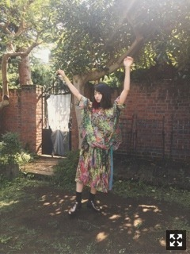
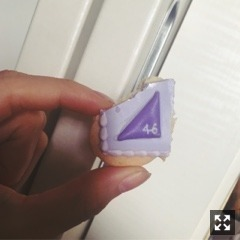

| 2017/10 02 Mon | 伊藤万理華 脳内。783回目 |

もう10月です！
伊藤万理華の脳内博覧会
5日からスタートします。
実はこの話が来たのは、
映画あさひなぐのクランクアップ日。
最後の最後に言われました。
嬉しいのはもちろんでしたが、
果たしてこんな自分の趣味全開の世界を
見たいと言う人がいるのか不安で。
いやー、絶対人来ないし怖いです、、
と言って考える時間をいただきました。
その後何度も打ち合わせを重ねて
たくさんたくさん考えていく内に、
なんとなくやりたいことが固まってきて、、
その間に渋谷のギャラリーだけでなく、
京都のイベントの一部にスペースをいただき、
開催するまでに話が広がりました。
6年間で出逢った人、
発見した新しい自分、
乃木坂で経験したものの
できる限りを詰め込んで
私の集大成にする思いで
準備を進めています。
まだまだギリギリまで準備中です。
加入前から表現することっていうのは
自分が特別に感じる薬みたいな、
元気になる特効薬的な何かがあります。
そこまで大層なものだったんだと
この6年間でわかりました。
プライベート、仕事関係なく
なにかつくっている時間、
制作現場にいる時間、
自由に歌って踊って動いてる時、
喉やお腹がぎゅってなるくらい
わくわくします。
ちょっとした自己満足だけど、
それを見て笑ってほしい
見逃さないでほしい
喜んでほしい
ずっとそんな気持ちがあります。
衝動で湧き出たもの
溜め込んでたコレクション
ファッション、ショートフィルム、ラジオ、
アートディレクション、グッズデザイン、、
全部全部好き勝手に
信頼のおけるスタッフの皆様と制作しました。
愛情込めてつくったこれらの作品を見て、
なんでも良いから
なにか感じてもらえると良いなあ
と、思っています、、
そんなかんじで
長々と話してしまいましたが、
本題に入ります。
私、伊藤万理華はこの個展を機に
乃木坂46を卒業することに決めました。
グループに属している人間である以上、
卒業というのはいつかは決めないと
いけない事だというのは
ずっと頭にありました。
その中で、今回の脳内博覧会は
私の全てを伝え切る事のできる最高の場。
ここで卒業するのが私らしい決断だと
思ったのです。
こういうかたちで
自分を発信する機会なんて
今後なかなかないです。
脳内博覧会を通して、
自分のやりたいことを
改めてじっくり考えようと思います。
応援してくださってるファンの皆様、
こんなかたちで発表してしまって
申し訳ないです。
まだまだこれから！
と声をかけてくださった方々を
裏切るかたちになってしまっているのかな、、
そういう不安は拭いきれないけど、
最後まで私なりに何かを返せるように
努力を続けたいです。
乃木坂46としての活動は年内で終わります。
残り少なく感じますが、
メンバーとしてめいっぱい楽しみます！
どうか最後まで
応援よろしくお願い致します。

伊藤万理華